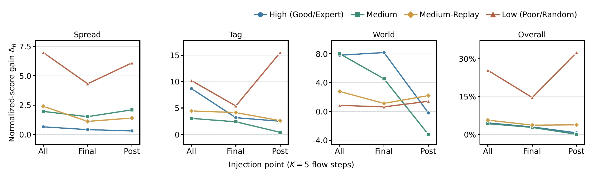
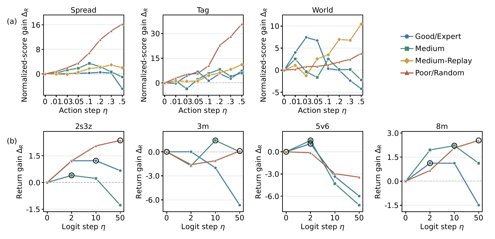
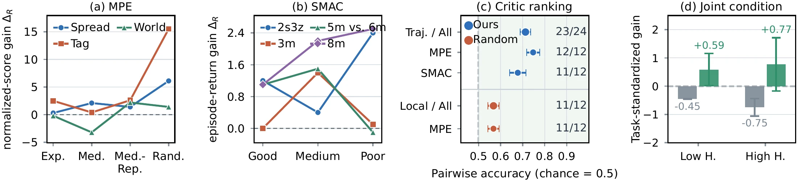

Propose
Generate a joint action with the frozen multi-agent flow policy.
ONE JOINT GRADIENT. BETTER COORDINATION.
G²MAF uses a frozen centralized critic to coordinate a single refinement of a frozen flow policy’s proposal at test time.
Sun Yat-sen University
01 / Overview
A frozen generative policy can propose a feasible joint action while leaving room for better coordination. G²MAF uses a centralized behavior critic to evaluate the full joint action and provide one joint gradient. A globally normalized update refines the proposal, and projection keeps the executable action within the feasible set.

02 / Method
Each agent’s gradient depends on the current actions of its teammates. A shared normalization gives the team one update budget. The canonical variant refines the decoded action; the paper also studies guidance within flow trajectories and masked logits for discrete actions.

Generate a joint action with the frozen multi-agent flow policy.
Compute one centralized critic gradient and normalize it across all agents.
Project the refined proposal onto the feasible action set and execute the joint action.
Inside G²MAF · Before & after
正在载入真实模型输出…
03 / Videos
Play the trajectory videos archived with this paper project.
Good dataset · episode 31669
Good dataset · episode 13583
Good dataset · episode 16943
Good dataset · episode 23654
These videos visualize recorded offline dataset trajectories. SMAC movement, allied actions and health follow the recordings, rendered with custom unit artwork; this is not StarCraft client footage or an evaluation of the proposed method. Enemy attack poses are inferred from allied health changes, and a terminal display frame may be appended for recorded wins.
04 / Results
The evaluation covers 24 settings across MPE and SMAC. At the reported operating points, the canonical variant improves 20 settings over the same frozen policy without refinement. MPE and SMAC use different score scales, and results are reported separately.
Bold and underlined entries retain the paper’s markings. Scroll wide tables horizontally.
Main results on (a) MPE and (b) SMAC. ``Data'' is the offline data mean, ``Diff'' abbreviates MADiff, and G2MAF denotes the refined frozen backbone at its selected operating point. Bold and underline mark the best and second best method in each row, excluding Data. The G2MAF point estimate is the selected sweep operating point; its ± value is the population standard deviation across K = 1–5 in a separate sweep, not a standard error across seeds. Published baselines retain their source uncertainty conventions.
| Task | Qual. | Data | BC | ICQ | TD3+BC | CQL | OMAR | Diff | MA-SfBC | DOM2 | G2MAF |
|---|---|---|---|---|---|---|---|---|---|---|---|
| Spread | Expert | 96.2 | 35.0±2.6 | 104.0±3.4 | 108.3±3.9 | 98.2±5.2 | 114.9±2.6 | 95.0±5.3 | 87.5±7.3 | 88.7±6.3 | 115.2±0.9 |
| MedRep | 9.3 | 10.0±3.8 | 13.6±5.7 | 15.4±5.6 | 31.4±7.2 | 37.9±6.1 | 30.3±2.5 | 8.2±4.6 | 63.1±9.5 | 47.3±2.2 | |
| Medium | 27.0 | 31.6±4.8 | 29.3±5.5 | 39.4±3.6 | 34.1±7.2 | 47.9±18.9 | 64.9±7.7 | 51.6±14.2 | 78.6±8.1 | 59.7±1.7 | |
| Random | 0.1 | -0.5±3.2 | 6.3±3.5 | 9.8±4.9 | 24.0±9.8 | 34.4±5.3 | 6.9±3.1 | 5.1±3.9 | 37.4±11.3 | 58.0±9.0 | |
| Tag | Expert | 89.5 | 40.0±9.6 | 113.0±14.4 | 115.2±12.8 | 119.3±14.0 | 123.9±10.5 | 103.0±12.0 | 77.4±13.9 | 98.2±14.4 | 139.7±1.1 |
| MedRep | 8.6 | 0.9±1.4 | 34.5±27.8 | 28.7±20.9 | 41.7±15.3 | 47.1±15.3 | 53.9±11.4 | 12.7±7.3 | 68.2±16.7 | 73.5±7.5 | |
| Medium | 43.8 | 22.5±1.8 | 63.3±20.0 | 65.1±29.5 | 61.7±23.1 | 66.7±23.2 | 72.7±9.4 | 47.1±17.9 | 82.6±18.2 | 112.7±1.1 | |
| Random | 0.0 | 1.2±0.5 | 2.2±1.3 | 6.0±2.1 | 11.1±2.8 | 11.1±2.8 | 4.6±2.6 | 11.6±5.1 | 29.6±8.1 | 46.1±2.9 | |
| World | Expert | 93.8 | 33.0±9.9 | 109.5±22.8 | 110.3±21.3 | 119.8±28.1 | 110.4±25.7 | 109.3±15.4 | 97.3±19.1 | 99.5±17.1 | 156.4±5.2 |
| MedRep | 11.2 | 2.3±1.5 | 12.0±9.1 | 17.4±8.1 | 19.3±18.3 | 42.9±19.5 | 19.8±6.2 | 9.1±5.9 | 65.9±10.6 | 45.8±2.0 | |
| Medium | 54.5 | 25.3±2.0 | 71.9±20.0 | 73.4±9.3 | 58.6±11.2 | 74.6±11.5 | 84.7±12.3 | 54.2±22.7 | 84.5±23.4 | 146.8±11.4 | |
| Random | 0.0 | -2.4±0.5 | 1.0±3.2 | 2.8±5.5 | 0.6±2.0 | 5.9±5.2 | 6.1±2.4 | 3.1±1.3 | 4.1±1.1 | 5.0±0.3 |
| Task | Qual. | Data | BC | ICQ | CQL | MA-DT | Diff | DoF | Flow BC | MAC-Flow | VGM2P | G2MAF |
|---|---|---|---|---|---|---|---|---|---|---|---|---|
| 3m | Good | 16.5 | 16.0±1.0 | 18.8±0.6 | 19.0±0.3 | 19.6±0.7 | 19.3±0.5 | 19.8±0.2 | 20.0±0.0 | 19.8±0.2 | 19.5±0.7 | 20.0±0.1 |
| Medium | 10.0 | 8.2±0.8 | 18.1±0.7 | 18.9±0.7 | 17.2±0.7 | 16.4±2.6 | 18.6±1.2 | 14.7±1.5 | 18.0±3.2 | 16.9±1.1 | 21.4±1.8 | |
| Poor | 4.7 | 4.4±0.1 | 14.4±1.2 | 5.8±0.4 | 8.9±0.3 | 10.3±6.1 | 10.9±1.1 | 4.5±0.1 | 10.6±2.2 | 14.9±1.5 | 14.8±0.9 | |
| 2s3z | Good | 18.3 | 18.2±0.4 | 19.6±0.3 | 19.1±0.8 | 19.4±0.1 | 15.9±1.2 | 18.5±0.8 | 19.5±0.1 | 19.5±0.5 | 19.9±0.1 | 21.2±0.1 |
| Medium | 12.6 | 14.3±0.7 | 17.2±0.8 | 14.3±2.0 | 17.4±0.3 | 15.6±0.3 | 18.1±0.9 | 15.1±2.0 | 17.6±0.6 | 16.5±0.6 | 19.1±0.4 | |
| Poor | 6.9 | 6.7±0.3 | 12.1±0.4 | 10.1±0.7 | 9.9±0.2 | 8.5±1.3 | 10.0±1.1 | 6.9±0.8 | 8.5±0.6 | 7.9±0.7 | 12.2±0.3 | |
| 5m_vs_6m | Good | 16.6 | 16.6±0.6 | 16.3±0.9 | 13.8±3.1 | 18.0±1.0 | 16.5±2.8 | 17.7±1.1 | 14.7±2.1 | 18.6±3.5 | 17.6±1.3 | 19.4±0.6 |
| Medium | 12.6 | 14.2±0.5 | 17.2±0.4 | 16.8±3.1 | 17.5±0.4 | 15.2±2.6 | 16.2±0.9 | 12.8±0.8 | 15.6±1.3 | 17.0±0.9 | 20.6±0.7 | |
| Poor | 7.5 | 7.5±0.2 | 9.4±0.4 | 10.4±1.0 | 8.9±0.3 | 8.9±1.3 | 10.8±0.3 | 7.7±0.8 | 9.8±2.1 | 10.7±1.1 | 12.4±0.6 | |
| 8m | Good | 16.9 | 16.7±0.4 | 19.6±0.3 | 13.1±6.1 | 19.2±0.1 | 18.9±1.1 | 19.6±0.3 | 19.5±0.2 | 19.7±0.3 | 19.7±0.4 | 21.1±0.3 |
| Medium | 10.1 | 10.7±0.5 | 18.6±0.5 | 16.3±3.1 | 18.0±0.5 | 16.8±1.6 | 18.6±0.8 | 18.2±0.8 | 19.4±0.6 | 18.2±1.6 | 19.7±0.4 | |
| Poor | 5.3 | 5.3±0.1 | 10.8±0.8 | 4.6±2.4 | 5.1±0.1 | 9.8±0.9 | 12.0±1.2 | 4.9±0.1 | 11.5±0.8 | 4.9±0.1 | 9.5±0.1 |

The manuscript has not yet been publicly released.
SMAC success rate (↑, our policy only): Frozen backbone vs. G2MAF at each method's selected denoising-step count. Success and shaped episode return measure different outcomes; success is therefore reported separately. Here Δwin=WG2MAF-WFrozen is the percentage-point change in success rate; ΔR is the shaped-return gain.
| Map | Quality | Frozen % | G2MAF % | Δwin | Map | Quality | Frozen % | G2MAF % | Δwin |
|---|---|---|---|---|---|---|---|---|---|
| 3m | Good | 95.6 | 95.6 | 0.0 | 5m_vs_6m | Good | 74.4 | 78.9 | +4.4 |
| Medium | 66.7 | 50.0 | -16.7 | Medium | 68.9 | 77.8 | +8.9 | ||
| Poor | 22.2 | 43.3 | +21.1 | Poor | 13.3 | 25.6 | +12.2 | ||
| 2s3z | Good | 97.8 | 95.6 | -2.2 | 8m | Good | 96.7 | 98.9 | +2.2 |
| Medium | 65.6 | 76.7 | +11.1 | Medium | 76.7 | 88.9 | +12.2 | ||
| Poor | 0.0 | 4.4 | +4.4 | Poor | 0.0 | 0.0 | 0.0 |
Model-side inference latency in milliseconds per decision for every evaluated setting. Base is the frozen backbone; Grad is the direct G2MAF critic-gradient step; G2MAF is the full refined policy.
| Task | Quality | Base (ms) | Grad (ms) | G2MAF (ms) | × | Task | Quality | Base (ms) | Grad (ms) | G2MAF (ms) | × |
|---|---|---|---|---|---|---|---|---|---|---|---|
| MPE | SMAC | ||||||||||
| Spread | Expert | 142.1 | 3.0 | 145.1 | 1.02 | 3m | Good | 189.9 | 3.4 | 179.5 | 0.94 |
| MedReplay | 137.4 | 3.0 | 142.7 | 1.04 | Medium | 175.7 | 3.9 | 188.5 | 1.07 | ||
| Medium | 140.5 | 3.2 | 149.1 | 1.06 | Poor | 221.2 | 6.8 | 233.2 | 1.05 | ||
| Random | 137.3 | 2.9 | 143.9 | 1.05 | 2s3z | Good | 153.8 | 4.3 | 181.9 | 1.18 | |
| Tag | Expert | 138.9 | 3.1 | 150.7 | 1.08 | Medium | 164.2 | 3.7 | 162.4 | 0.99 | |
| MedReplay | 135.6 | 3.3 | 147.3 | 1.09 | Poor | 143.7 | 3.4 | 165.4 | 1.15 | ||
| Medium | 164.5 | 5.9 | 168.1 | 1.02 | 5m_vs_6m | Good | 181.3 | 3.6 | 178.7 | 0.99 | |
| Random | 141.9 | 3.2 | 144.1 | 1.02 | Medium | 171.3 | 3.6 | 163.8 | 0.96 | ||
| World | Expert | 136.7 | 2.7 | 139.9 | 1.02 | Poor | 162.9 | 3.3 | 176.8 | 1.09 | |
| MedReplay | 141.0 | 3.6 | 148.0 | 1.05 | 8m | Good | 165.9 | 3.5 | 179.4 | 1.08 | |
| Medium | 139.2 | 3.2 | 144.6 | 1.04 | Medium | 176.9 | 3.8 | 177.7 | 1.00 | ||
| Random | 155.5 | 5.9 | 156.8 | 1.01 | Poor | 171.3 | 6.3 | 242.9 | 1.42 | ||
| All (24-setting mean) | 157.9 | 3.9 | 167.1 | 1.06 | |||||||
Frozen is absolute performance; G2MAF, Best-N, 1-agent and Factor. are paired gains. Best-N uses 16 perturbations; Factor. is MPE-only. These controls use a separate evaluation batch from the main table.
Full-grid mechanism controls and local-step diagnostics over all 24 settings. (a) Paired mean performance gains for the full centralized update and the structure/search controls. (b) Critic-predicted value change and realized update geometry from the same rerun.
| Task | Quality | Frozen | G2MAF | Best-N | 1-agent | Factor. | Task | Quality | Frozen | G2MAF | Best-N | 1-agent | Factor. |
|---|---|---|---|---|---|---|---|---|---|---|---|---|---|
| MPE | SMAC | ||||||||||||
| Spread | Expert | 108.59 | +0.24 | +1.19 | +0.22 | +0.05 | 3m | Good | 19.17 | +0.01 | +0.03 | +0.01 | -- |
| MedReplay | 43.29 | +1.72 | -2.48 | -0.03 | +1.62 | Medium | 15.12 | -1.88 | -1.70 | +0.79 | -- | ||
| Medium | 59.35 | +3.50 | -4.74 | +1.24 | +2.21 | Poor | 9.14 | +1.72 | +1.04 | -0.03 | -- | ||
| Random | 36.69 | +6.84 | +5.93 | +1.59 | +6.30 | 2s3z | Good | 19.54 | +0.32 | +0.26 | +0.46 | -- | |
| Tag | Expert | 113.02 | +6.46 | +7.45 | +5.05 | +10.57 | Medium | 17.08 | +1.62 | +0.75 | -0.06 | -- | |
| MedReplay | 60.90 | +3.77 | -0.05 | +0.66 | +5.99 | Poor | 9.87 | +2.16 | -0.72 | +0.57 | -- | ||
| Medium | 94.58 | +5.24 | +0.05 | -0.61 | +0.05 | 5m_vs_6m | Good | 16.97 | +0.25 | -0.66 | -0.05 | -- | |
| Random | 20.24 | +10.33 | +10.00 | +4.58 | +12.36 | Medium | 15.24 | +2.32 | +1.64 | +2.97 | -- | ||
| World | Expert | 149.35 | +2.50 | +3.59 | +1.41 | +2.72 | Poor | 11.58 | -1.22 | -0.12 | +0.06 | -- | |
| MedReplay | 50.11 | +3.26 | -0.33 | -0.33 | +6.20 | 8m | Good | 19.07 | +0.63 | +0.40 | -0.09 | -- | |
| Medium | 112.72 | +4.02 | +2.17 | -0.54 | +1.63 | Medium | 17.90 | +1.06 | +0.40 | -0.45 | -- | ||
| Random | 0.33 | +0.98 | +0.00 | +0.22 | +0.65 | Poor | 6.62 | +2.18 | +1.05 | +0.33 | -- | ||
| Task | Quality | Return | ΔQ | Norm | Bound. frac. | Task | Quality | Return | ΔQ | Norm | Bound. frac. |
|---|---|---|---|---|---|---|---|---|---|---|---|
| MPE | SMAC | ||||||||||
| Spread | Expert | 108.84 | +3.21 | 0.030 | 0.017 | 3m | Good | 19.18 | +0.03 | 0.999 | -- |
| MedReplay | 45.02 | +9.79 | 0.098 | 0.030 | Medium | 13.24 | +0.11 | 9.076 | -- | ||
| Medium | 62.85 | +9.85 | 0.098 | 0.028 | Poor | 10.86 | +0.25 | 43.610 | -- | ||
| Random | 43.51 | +5.31 | 0.100 | 0.002 | 2s3z | Good | 19.86 | +0.32 | 10.000 | -- | |
| Tag | Expert | 119.53 | +3.85 | 0.047 | 0.081 | Medium | 18.70 | +0.33 | 1.941 | -- | |
| MedReplay | 64.67 | +54.19 | 0.096 | 0.047 | Poor | 12.04 | +0.31 | 27.311 | -- | ||
| Medium | 99.81 | +16.87 | 0.087 | 0.129 | 5m_vs_6m | Good | 17.22 | +0.08 | 1.908 | -- | |
| Random | 30.52 | +2.51 | 0.098 | 0.042 | Medium | 17.56 | +0.16 | 1.923 | -- | ||
| World | Expert | 151.85 | +3.89 | 0.082 | 0.149 | Poor | 10.37 | +0.17 | 1.722 | -- | |
| MedReplay | 53.37 | +5.46 | 0.089 | 0.097 | 8m | Good | 19.70 | +0.54 | 2.000 | -- | |
| Medium | 116.74 | +13.02 | 0.088 | 0.148 | Medium | 18.95 | +2.79 | 9.835 | -- | ||
| Random | 1.41 | +0.16 | 0.028 | 0.148 | Poor | 8.80 | +1.76 | 30.005 | -- | ||
Full-grid non-oracle step-size transfer and perturbation controls over all 24 settings. (a) Canonical gain, the step selected from the other settings in the same domain, and the independently evaluated held-out gain. (b) Canonical Base and G2MAF gain together with independently measured matched nominal-radius Random and Shuffled effects. MPE values use the corresponding table in the paper OMAR-normalized scale; SMAC values use shaped episodic return. Results across the two panels use different evaluation batches and are compared descriptively.
| Task | Quality | Canonical ΔR | LOTO η | LOTO ΔR | Task | Quality | Canonical ΔR | LOTO η | LOTO ΔR |
|---|---|---|---|---|---|---|---|---|---|
| MPE | SMAC | ||||||||
| Spread | Expert | +0.30 | 0.1 | -0.76 | 3m | Good | +0.00 | 1 | +0.00 |
| MedReplay | +1.40 | 0.1 | +2.12 | Medium | +1.40 | 2 | -1.75 | ||
| Medium | +2.10 | 0.1 | +4.97 | Poor | +0.10 | 2 | -1.61 | ||
| Random | +6.10 | 0.1 | +7.62 | 2s3z | Good | +1.20 | 2 | +1.22 | |
| Tag | Expert | +2.50 | 0.1 | +4.76 | Medium | +0.40 | 2 | +0.40 | |
| MedReplay | +2.60 | 0.1 | +10.38 | Poor | +2.40 | 2 | +1.21 | ||
| Medium | +0.40 | 0.1 | +11.86 | 5m_vs_6m | Good | +1.10 | 2 | +1.08 | |
| Random | +15.50 | 0.1 | +13.79 | Medium | +1.50 | 10 | -4.30 | ||
| World | Expert | -0.20 | 0.1 | +14.72 | Poor | -0.10 | 2 | -0.14 | |
| MedReplay | +2.20 | 0.1 | +13.14 | 8m | Good | +1.10 | 2 | +1.12 | |
| Medium | -3.20 | 0.1 | +13.60 | Medium | +2.20 | 2 | +1.95 | ||
| Random | +1.40 | 0.1 | +0.24 | Poor | +2.50 | 2 | +0.67 | ||
| LOTO positive | 11/12 | LOTO positive | 7/12 | ||||||
| Task | Quality | Base | G2MAF ΔR | Random ΔR | Shuffled ΔR | Task | Quality | Base | G2MAF ΔR | Random ΔR | Shuffled ΔR |
|---|---|---|---|---|---|---|---|---|---|---|---|
| MPE (OMAR-normalized score) | SMAC (episode return) | ||||||||||
| Spread | Expert | 114.90 | +0.30 | -1.99 | -1.64 | 3m | Good | 20.0 | +0.0 | -0.2 | -1.1 |
| MedReplay | 45.91 | +1.40 | -0.27 | -0.08 | Medium | 20.0 | +1.4 | -1.4 | -2.4 | ||
| Medium | 57.60 | +2.10 | -8.30 | -3.42 | Poor | 14.7 | +0.1 | -8.3 | -4.2 | ||
| Random | 51.91 | +6.09 | +2.34 | -1.10 | 2s3z | Good | 20.0 | +1.2 | +0.0 | -0.8 | |
| Tag | Expert | 137.22 | +2.50 | +8.87 | +5.42 | Medium | 18.7 | +0.4 | -0.3 | +1.0 | |
| MedReplay | 70.90 | +2.59 | +4.10 | +5.66 | Poor | 9.8 | +2.4 | -3.8 | +1.1 | ||
| Medium | 112.31 | +0.38 | -5.85 | -5.75 | 5m_vs_6m | Good | 18.3 | +1.1 | -0.2 | +1.1 | |
| Random | 30.61 | +15.52 | +3.35 | +3.68 | Medium | 19.1 | +1.5 | +0.7 | -0.6 | ||
| World | Expert | 156.63 | -0.22 | +8.59 | +9.02 | Poor | 12.5 | -0.1 | +1.0 | -0.6 | |
| MedReplay | 43.59 | +2.17 | +12.17 | +9.46 | 8m | Good | 20.0 | +1.1 | +0.3 | +0.7 | |
| Medium | 150.00 | -3.15 | +7.93 | +12.83 | Medium | 17.5 | +2.2 | +1.7 | +1.4 | ||
| Random | 3.59 | +1.41 | -0.22 | +0.87 | Poor | 7.0 | +2.5 | -0.4 | +1.9 | ||
05 / Analysis
The paper examines where to inject the gradient, how the step size affects return, and how critic reliability relates to improvement. The local theoretical result concerns an increase in critic prediction under smoothness and step-size assumptions; realized return is assessed empirically.


Further experiments



{kind=link}
{kind=link}
{kind=link}